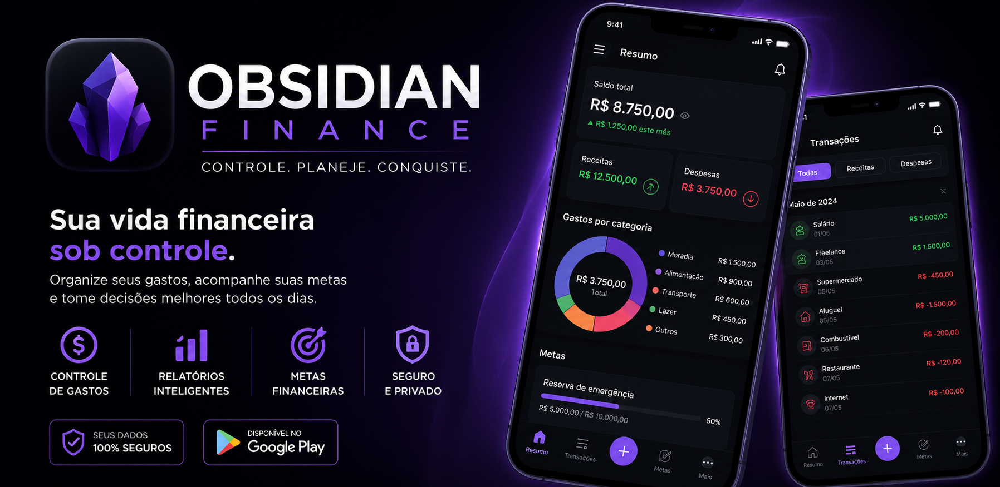

Receitas
Cadastre salários, freelas, rendas extras e qualquer entrada do mês.
Controle financeiro pessoal
Organize receitas, gastos fixos, gastos variáveis e acompanhe seu saldo mensal com uma estética dark elegante e direta.

Recursos
Cadastre salários, freelas, rendas extras e qualquer entrada do mês.
Controle aluguel, internet, assinaturas, contas e despesas recorrentes.
Registre mercado, transporte, lazer, compras e gastos inesperados.
Veja saldo, percentual comprometido e uma análise simples da sua situação.
Próximas versões
O Obsidian Finance pode receber metas financeiras, categorias avançadas, cartão de crédito, parcelamentos, relatórios e exportação de dados.
Download
Baixe o APK ou encontre o app na Google Play quando estiver publicado.
Privacidade
Esta versão do Obsidian Finance salva os dados localmente no aparelho. O app não vende, compartilha ou envia suas informações financeiras para terceiros.
Ler Política de Privacidade